MULTISPATI PCA and negative spatial autocorrelation
Lambda Moses
2023-12-10
Source:vignettes/multispati.Rmd
multispati.RmdIntroduction
Due to the large number of genes quantified in single cell and spatial transcriptomics, dimension reduction is part of the standard workflow to analyze such data, to visualize, to help interpreting the data, to distill relevant information and reduce noise, to facilitate downstream analyses such as clustering and pseudotime, to project different samples into a shared latent space for data integration, and so on.
The first dimension reduction methods we learn about, such as good
old principal component analysis (PCA), tSNE, and UMAP, don’t use
spatial information. With the rise of spatial transcriptomics, some
dimension reduction methods that take spatial dependence into account
have been written. Some, such as SpatialPCA (Shang and Zhou 2022), NSF (Townes and Engelhardt 2023), and
MEFISTO (Velten et al. 2022)
use factor analysis or probabilistic PCA which is related to factor
analysis, and model the factors as Gaussian processes, with a spatial
kernel for the covariance matrix, so the factors have positive spatial
autocorrelation and can be used for downstream clustering where the
clusters can be more spatially coherent. Some use graph convolution
networks on a spatial neighborhood graph to find spatially informed
embeddings of the cells, such as conST (Zong et al. 2022) and SpaceFlow
(Ren et al. 2022). SpaSRL
(Zhang et al. 2023) finds a low dimension
projection of spatial neighborhood augmented data.
Spatially informed dimension reduction is actually not new, and dates
back to at least 1985, with Wartenberg’s crossover of Moran’s I and PCA
(Wartenberg 1985), which was generalized
and further developed as MULTISPATI PCA (Dray,
Saı̈d, and Débias 2008), implemented in the adespatial
package on CRAN. In short, while PCA tries to maximize the variance
explained by each PC, MULTISPATI maximizes the product of Moran’s I and
variance explained. Also, while all the eigenvalues from PCA are
non-negative, because the covariance matrix is positive semidefinite,
MULTISPATI can give negative eigenvalues, which represent negative
spatial autocorrelation, which can be present and interesting but is not
as common as positive spatial autocorrelation and is often masked by the
latter (Griffith 2019).
In single cell -omics conventions, let \(X\) denote a gene count matrix whose columns are cells or Visium spots and whose rows are genes, with \(n\) columns. Let \(W\) denote the row normalized \(n\times n\) adjacency matrix of the spatial neighborhood graph of the cells or Visium spots, which does not have to be symmetric. MULTISPATI diagonalizes a symmetric matrix
\[ H = \frac 1 {2n} X(W^t+W)X^t \]
However, the implementation in adespatial is more
general and can be used for other multivariate analyses in the duality
diagram paradigm, such as correspondence analysis; the equation
above is simplified just for PCA, without having to introduce the
duality diagram here.
Voyager 1.2.0 (Bioconductor 3.17) has a much faster implementation of
MULTISPATI PCA based on RSpectra.
See benchmark here.
In this vignette, we perform MULTISPATI PCA on the MERFISH mouse liver dataset. See the first vignette using this dataset here.
Here we load the packages used:
library(Voyager)
library(SFEData)
library(SpatialFeatureExperiment)
library(scater)
library(scran)
library(scuttle)
library(ggplot2)
library(stringr)
library(tidyr)
library(tibble)
library(bluster)
library(BiocSingular)
library(BiocParallel)
library(sf)
library(patchwork)
theme_set(theme_bw())
(sfe <- VizgenLiverData())
#> see ?SFEData and browseVignettes('SFEData') for documentation
#> downloading 1 resources
#> retrieving 1 resource
#> loading from cache
#> class: SpatialFeatureExperiment
#> dim: 385 395215
#> metadata(0):
#> assays(1): counts
#> rownames(385): Comt Ldha ... Blank-36 Blank-37
#> rowData names(3): means vars cv2
#> colnames(395215): 10482024599960584593741782560798328923
#> 111551578131181081835796893618918348842 ...
#> 92389687374928708938472537234969690424
#> 96399783859933548456002372694492036651
#> colData names(9): fov volume ... nCounts nGenes
#> reducedDimNames(0):
#> mainExpName: NULL
#> altExpNames(0):
#> spatialCoords names(2) : center_x center_y
#> imgData names(1): sample_id
#>
#> unit: full_res_image_pixels
#> Geometries:
#> colGeometries: centroids (POINT), cellSeg (POLYGON)
#>
#> Graphs:
#> sample01:MULTISPATI PCA is one of the multivariate methods introduced in
Voyager 1.2.0. All multivariate methods in
Voyager are listed here:
listSFEMethods(variate = "multi")
#> name description
#> 1 multispati MULTISPATI PCA
#> 2 localC_multi Multivariate local Geary's C
#> 3 localC_perm_multi Multivariate local Geary's C permutation testingWhen calling calculate*variate() or
run*variate(), the type (2nd) argument takes
either an SFEMethod object or a string that matches an
entry in the name column in the data frame returned by
listSFEMethods().
Quality control
QC was already performed in the first vignette. We do the same QC here, but see the first vignette for more details.
is_blank <- str_detect(rownames(sfe), "^Blank-")
sfe <- addPerCellQCMetrics(sfe, subset = list(blank = is_blank))
get_neg_ctrl_outliers <- function(col, sfe, nmads = 3, log = FALSE) {
inds <- colData(sfe)$nCounts > 0 & colData(sfe)[[col]] > 0
df <- colData(sfe)[inds,]
outlier_inds <- isOutlier(df[[col]], type = "higher", nmads = nmads, log = log)
outliers <- rownames(df)[outlier_inds]
col2 <- str_remove(col, "^subsets_")
col2 <- str_remove(col2, "_percent$")
new_colname <- paste("is", col2, "outlier", sep = "_")
colData(sfe)[[new_colname]] <- colnames(sfe) %in% outliers
sfe
}
sfe <- get_neg_ctrl_outliers("subsets_blank_percent", sfe, log = TRUE)Remove the outliers and empty cells:
inds <- !sfe$is_blank_outlier & sfe$nCounts > 0
(sfe <- sfe[, inds])
#> class: SpatialFeatureExperiment
#> dim: 385 390348
#> metadata(0):
#> assays(1): counts
#> rownames(385): Comt Ldha ... Blank-36 Blank-37
#> rowData names(3): means vars cv2
#> colnames(390348): 10482024599960584593741782560798328923
#> 111551578131181081835796893618918348842 ...
#> 92389687374928708938472537234969690424
#> 96399783859933548456002372694492036651
#> colData names(16): fov volume ... total is_blank_outlier
#> reducedDimNames(0):
#> mainExpName: NULL
#> altExpNames(0):
#> spatialCoords names(2) : center_x center_y
#> imgData names(1): sample_id
#>
#> unit: full_res_image_pixels
#> Geometries:
#> colGeometries: centroids (POINT), cellSeg (POLYGON)
#>
#> Graphs:
#> sample01:There still are over 390,000 cells left after removing the outliers.
Next we compute Moran’s I for QC metrics, which requires a spatial neighborhood graph:
system.time(
colGraph(sfe, "knn5") <- findSpatialNeighbors(sfe, method = "knearneigh",
dist_type = "idw", k = 5,
style = "W")
)
#> user system elapsed
#> 32.773 0.182 32.972
features_use <- c("nCounts", "nGenes", "volume")
sfe <- colDataUnivariate(sfe, "moran.mc", features_use,
colGraphName = "knn5", nsim = 49,
BPPARAM = MulticoreParam(2))
plotMoranMC(sfe, features_use)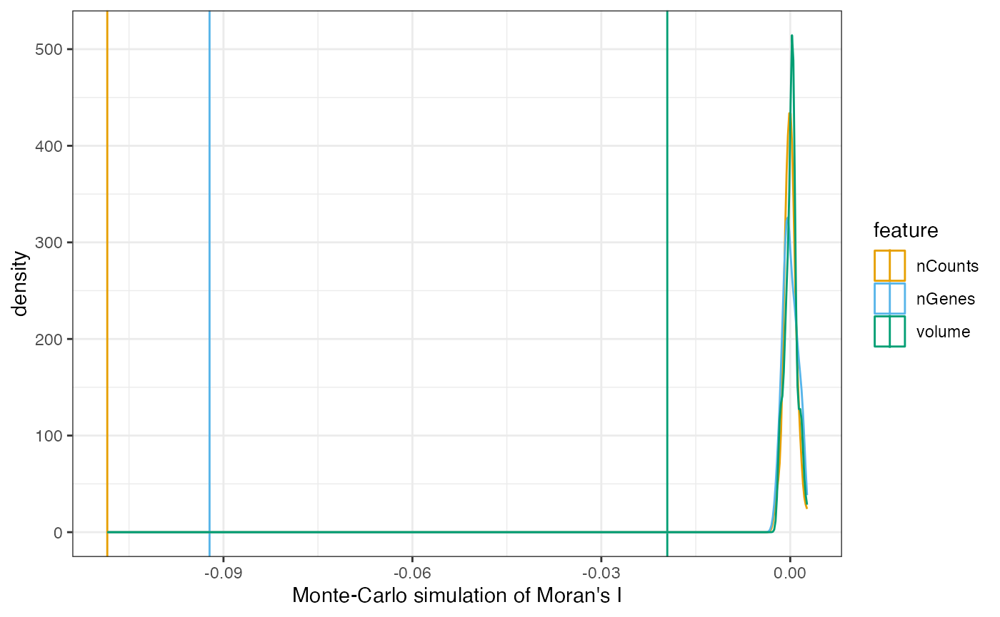
Here Moran’s I is a little negative, but from the permutation
testing, it is significant, though that can also be the large number of
cells. The lower bound of Moran’s I given the spatial neighborhood graph
is usually closer to -0.5 than -1, while the upper bound is usually
around 1. The bounds given a specific spatial neighborhood graph can be
found with moranBounds(), but because it double centers the
adjacency matrix, hence making it dense, there isn’t enough memory to
use it for the entire dataset. But we can look at the Moran bounds of a
small subset of data, which might be generalizable to the whole dataset
given that this tissue appears quite homogeneous in space.
bbox_use <- c(xmin = 6000, xmax = 7000, ymin = 4000, ymax = 5000)
inds2 <- st_intersects(cellSeg(sfe), st_as_sfc(st_bbox(bbox_use)),
sparse = FALSE)[,1]
sfe_sub <- sfe[, inds2]
(mb <- moranBounds(colGraph(sfe_sub, "knn5")))
#> Imin Imax
#> -0.6079436 1.0608389So considering the bounds, the MOran’s I values of the QC metrics are more like
setNames(colFeatureData(sfe)[c("nCounts", "nGenes", "volume"),
"moran.mc_statistic_sample01"] / mb["Imin"],
features_use)
#> nCounts nGenes volume
#> 0.17839356 0.15168017 0.03211427whose magnitudes seem more substantial for nCounts and
nGenes if it’s positive spatial autocorrelation. So there
may be mild to moderate negative spatial autocorrelation.
# Normalize data
sfe <- logNormCounts(sfe)Hepatic zonation
This dataset comes from a relatively large piece of tissue and we need to zoom into a smaller region to better see the local structures. Here we specify a bounding box.
bbox_use <- c(xmin = 6100, xmax = 7100, ymin = 7500, ymax = 8500)A portal triad is shown near the top right of this bounding box. The two large vessels on the left and bottom right are central veins. The portal triad consists of the hepatic artery, portal vein which brings blood from the intestine, and bile duct, so it’s more oxygenated. The regions around the central vein is more deoxygenated. The different oxygen and nutrient contents mean that hepatocytes play different metabolic roles in the zones between the portal triad and the central vein. Here we plot some zonation marker genes from (Halpern et al. 2017).
markers <- c("Axin2", "Cyp1a2", "Gstm3", "Psmd4", # Pericentral
"Cyp2e1", "Asl", "Alb", "Ass1", # Monotonic but has intermediate
"Hamp", "Igfbp2", "Cyp8b1", "Mup3", # Non-monotonic
"Arg1", "Pck1", "C2", "Sdhd") # PeriportalOnly 3 of these marker genes are present in this dataset. The first two are pericentral (near the central vein), and the last one is periportal (near the portal triad).
plotSpatialFeature(sfe, markers[inds], colGeometryName = "cellSeg",
ncol = 3, bbox = bbox_use)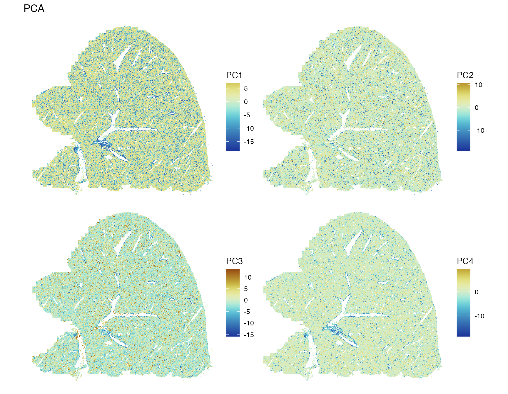
Besides hepatocytes, the liver also has many endothelial cells and Kupffer cells (macrophages). Marker genes of these cells from (Bonnardel et al. 2019) are plotted to visualize these cell types in space:
# Kuppfer cells
kc_genes <- c("Timd4", "Vsig4", "Clec4f", "Clec1b", "Il18bp", "C6", "Irf7",
"Slc40a1", "Cdh5", "Nr1h3", "Dmpk", "Paqr9", "Pcolce2", "Kcna2",
"Gbp8", "Iigp1", "Helz2", "Cd207", "Icos", "Adcy4", "Slc1a2",
"Rsad2", "Slc16a9", "Cd209f", "Oasl1", "Fam167a")
which(kc_genes %in% rownames(sfe))
#> [1] 9Only one of the Kupffer cell markers is available in this dataset.
plotSpatialFeature(sfe, kc_genes[9], colGeometryName = "cellSeg",
bbox = bbox_use)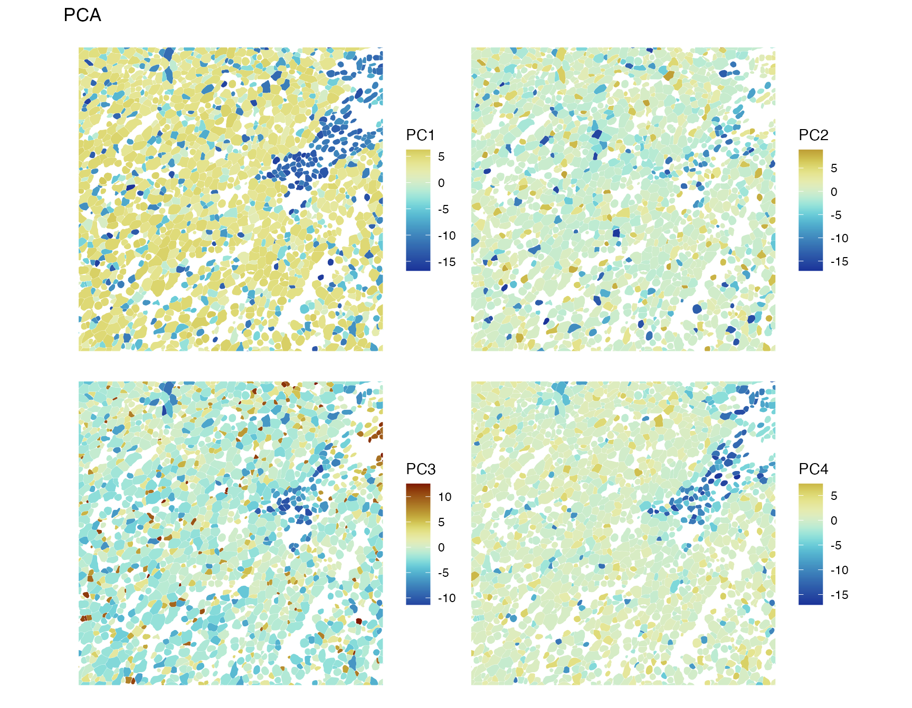
Expression of this gene does not seem very spatially coherent.
# Endothelial cells
lec_genes <- c("Rspo3", "Wnt2", "Wnt9b", "Pcdhgc5", "Ecm1", "Ltbp4", "Efnb2")
(inds_lec <- which(lec_genes %in% rownames(sfe)))
#> [1] 2 6 7Only 3 of these endothelial cell marker genes are available in this dataset.
plotSpatialFeature(sfe, lec_genes[inds_lec], colGeometryName = "cellSeg",
bbox = bbox_use, ncol = 3)
Wnt2 seems to be more pericentral, while Ltbp4 and Efnb2 seem more periportal.
Some of these marker genes will show up in the top PC loadings non-spatial and spatial PCA.
Non-spatial PCA
First we run non-spatial PCA, to compare to MULTISPATI.
set.seed(29)
system.time(
sfe <- runPCA(sfe, ncomponents = 20, subset_row = !is_blank,
exprs_values = "logcounts",
scale = TRUE, BSPARAM = IrlbaParam())
)
#> user system elapsed
#> 19.600 1.033 20.656
gc()
#> used (Mb) gc trigger (Mb) limit (Mb) max used (Mb)
#> Ncells 16042090 856.8 23199771 1239.1 NA 23199771 1239.1
#> Vcells 239267700 1825.5 536340089 4092.0 16384 536197849 4090.9That’s pretty quick for almost 400,000 cells, but there aren’t that many genes here. Use the elbow plot to see variance explained by each PC:
ElbowPlot(sfe)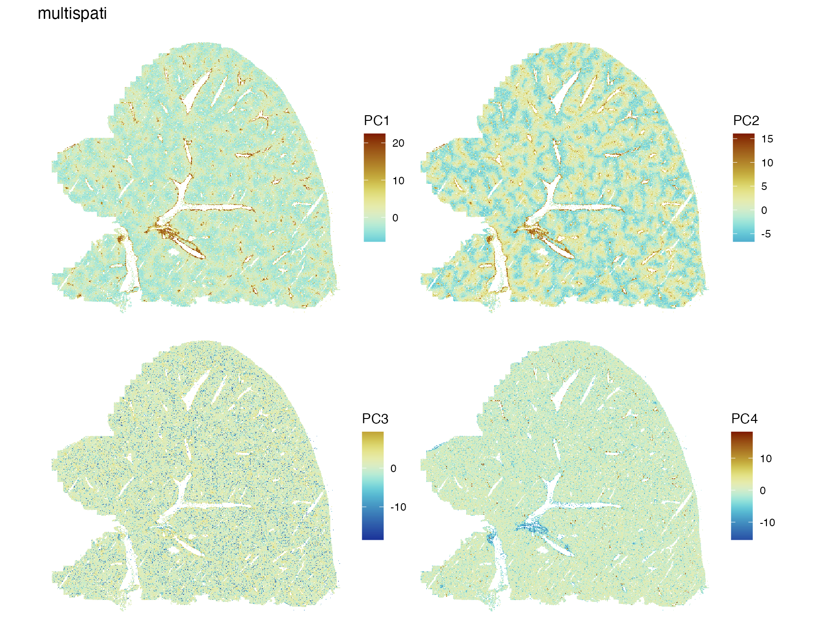
Plot top gene loadings in each PC
plotDimLoadings(sfe)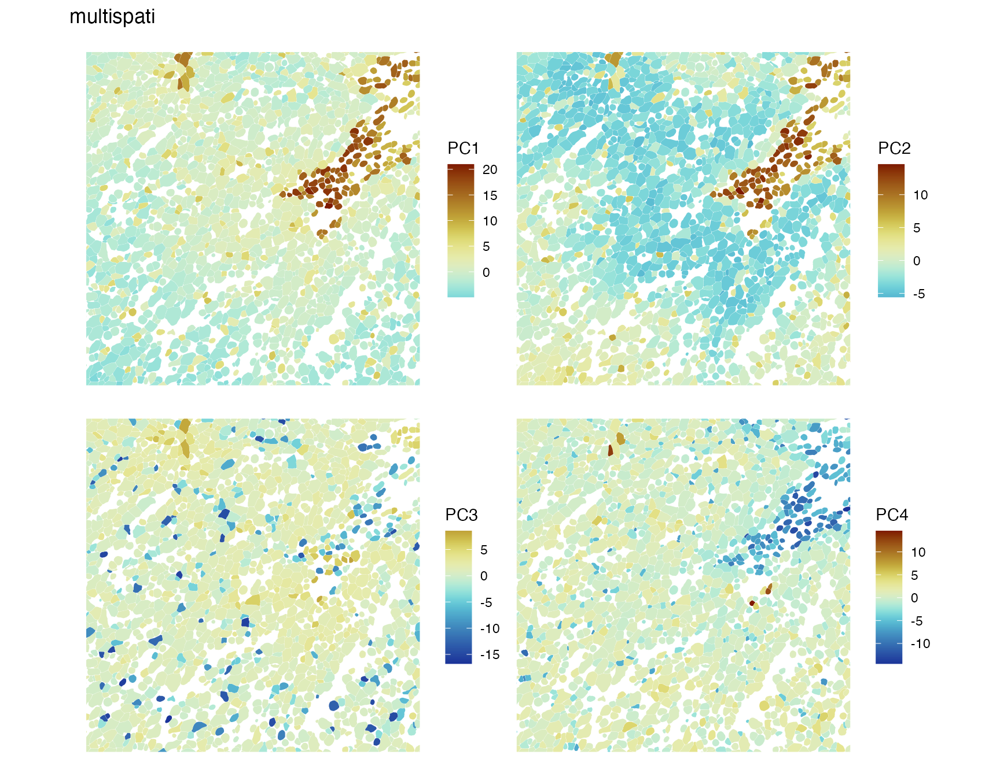
Many of these genes seem to be related to the endothelium. PC1 and PC4 concern the Kupffer cells as well, as the Kupffer cell marker gene Cdh5 has high loading.
Plot the first 4 PCs in space
spatialReducedDim(sfe, "PCA", 4, colGeometryName = "centroids", scattermore = TRUE,
divergent = TRUE, diverge_center = 0)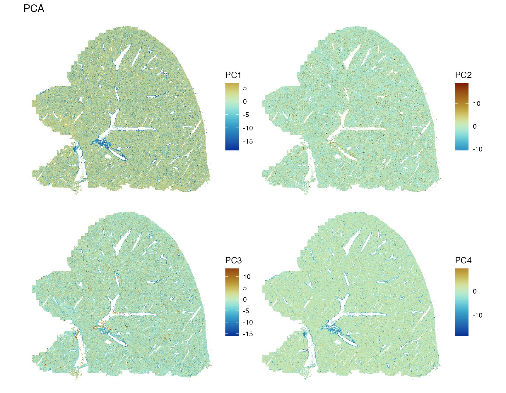
PC1 and PC4 highlight the major blood vessels, while PC2 and PC3 have less spatial structure. While in the CosMX and Xenium datasets on this website, the top PCs have clear spatial structures despite the absence of spatial information in non-spatial PCA because of clear spatial compartments for some cell types, which does not seem to be the case in this dataset except for the blood vessels. We have seen above that some genes have strong spatial structures.
While PC2 and PC3 don’t seem to have large scale spatial structure, they may have more local spatial structure not obvious from plotting the entire section, so we zoom into a bounding box which shows hepatic zonation.
spatialReducedDim(sfe, "PCA", ncomponents = 4, colGeometryName = "cellSeg",
bbox = bbox_use, divergent = TRUE, diverge_center = 0)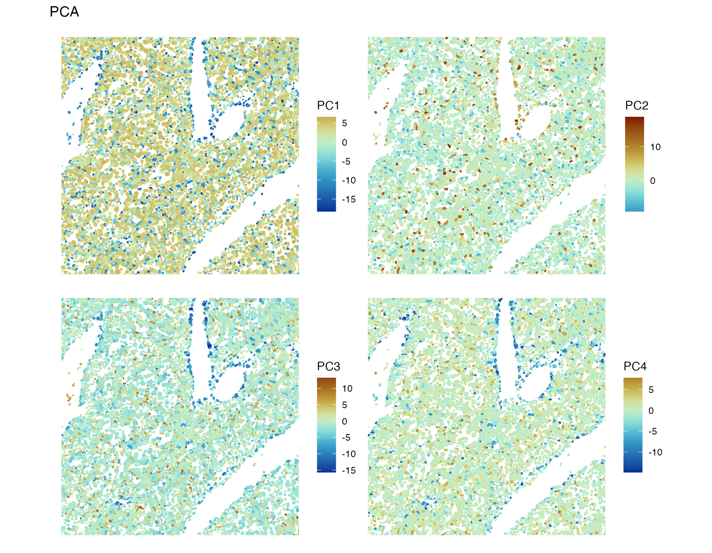
There’s some spatial structure at a smaller scale, perhaps some negative spatial autocorrelation.
MULTISPATI PCA
system.time({
sfe <- runMultivariate(sfe, "multispati", colGraphName = "knn5", nfposi = 20,
nfnega = 20)
})
#> Warning in asMethod(object): sparse->dense coercion: allocating vector of size
#> 1.1 GiB
#> user system elapsed
#> 171.052 18.654 205.442Then plot the most positive and most negative eigenvalues. Note that the eigenvalues here are not variance explained. Instead, they are the product of variance explained and Moran’s I. So the most positive eigenvalues correspond to eigenvectors that simultaneously explain more variance and have large positive Moran’s I. The most negative eigenvalues correspond to eigenvectors that simultaneously explain more variance and have negative Moran’s I.
ElbowPlot(sfe, nfnega = 20, reduction = "multispati")
Here the positive eigenvalues drop sharply from PC1 to PC4, and there
is only one very negative eigenvalue which might be interesting, which
is unsurprising given the moderately negative Moran’s I for
nCounts and nGenes. However, from the first
MERFISH vignette, none of the genes have very negative Moran’s I.
Perhaps the negative eigenvalue comes from negative spatial
autocorrelation in a gene program or “eigengene” and is not obvious from
individual genes. This is the beauty of multivariate analysis.
What do these components mean? Each component is a linear combination of genes to maximize the product of variance explained and Moran’s I. The second component maximizes this product provided that it’s orthogonal to the first component, and so on. As the loss in variance explained is usually not huge, these components can be considered axes along which spatially coherent groups of spots are separated from each other as much as possible according to expression of the highly variable genes, so in theory, clustering with positive MULTISPATI components should give more spatially coherent clusters. Because of the spatial coherence, MULTISPATI might be more robust to outliers.
plotDimLoadings(sfe, dims = c(1:3, 40), reduction = "multispati")
From gene loadings, PC40 seems to separate endothelial cells and Kupffer cells from hepatocytes.
Plot the these PCs:
spatialReducedDim(sfe, "multispati", components = c(1:3, 40),
colGeometryName = "cellSeg", bbox = bbox_use,
divergent = TRUE, diverge_center = 0)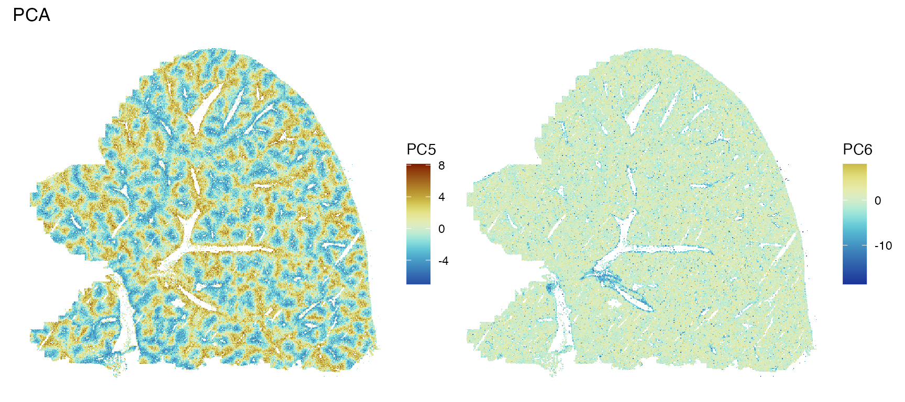
The first two PCs pick up zoning. PC3 seems to have smaller scale spatial structure. PC”40” (should really be 300 something) is an example of negative spatial autocorrelation in biology. That Kupffer cells and endothelial cells are scattered among hepatocytes may play a functional role. This does not mean that non-spatial PCA is bad. While MULTISPATI tends not to lose too much variance explained in per PC with positive eigenvalues, it identifies co-expressed genes with spatially structured expression patterns. MULTISPATI tells a different story from non-spatial PCA. PCA cell embeddings are often used for downstream analysis. Whether to use MULTISPATI embeddings instead and which or how many PCs to use depend on the questions asked in the further downstream analyses.
Spatial autocorrelation of principal components
Moran’s I
Here we compare Moran’s I for cell embeddings in each non-spatial and MULTISPATI PC:
# non-spatial
sfe <- reducedDimMoransI(sfe, dimred = "PCA", components = 1:20,
BPPARAM = MulticoreParam(2))
# spatial
sfe <- reducedDimMoransI(sfe, dimred = "multispati", components = 1:40,
BPPARAM = MulticoreParam(2))
df_moran <- tibble(PCA = reducedDimFeatureData(sfe, "PCA")$moran_sample01[1:20],
MULTISPATI_pos =
reducedDimFeatureData(sfe, "multispati")$moran_sample01[1:20],
MULTISPATI_neg =
reducedDimFeatureData(sfe,"multispati")$moran_sample01[21:40] |>
rev(),
index = 1:20)
data("ditto_colors")
df_moran |>
pivot_longer(cols = -index, values_to = "value", names_to = "name") |>
ggplot(aes(index, value, color = name)) +
geom_line() +
scale_color_manual(values = ditto_colors) +
geom_hline(yintercept = 0, color = "gray") +
geom_hline(yintercept = mb, linetype = 2, color = "gray") +
scale_y_continuous(breaks = scales::breaks_pretty()) +
scale_x_continuous(breaks = scales::breaks_width(5)) +
labs(y = "Moran's I", color = "Type", x = "Component")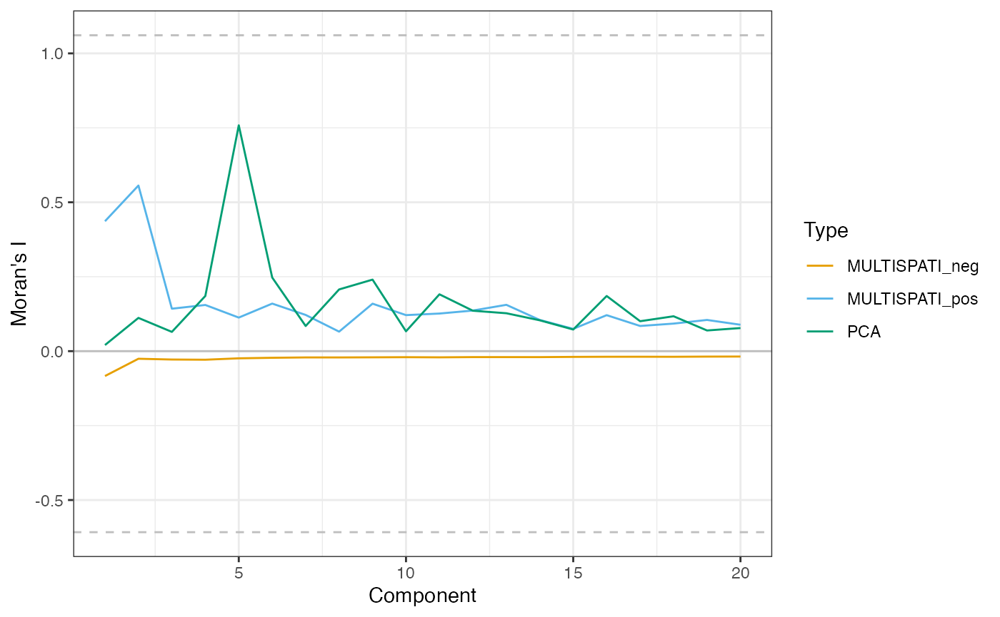
In MULTISPATI, Moran’s I is high in PC1 and PC2, but then sharply drops. Moran’s I for the PC with the most negative eigenvalues is not very negative, which means the large magnitude of that eigenvalue comes from explaining more variance. However, considering the lower bound of Moran’s I that is around -0.6 instead of -1, the magnitude of Moran’s I for the PC with the most negative eigenvalue is not trivial.
min(df_moran$MULTISPATI_neg) / mb[1]
#> Imin
#> 0.1374483Non-spatial PCs are not sorted by Moran’s I; PC5 has surprising large Moran’s I.
spatialReducedDim(sfe, "PCA", component = 5, colGeometryName = "cellSeg",
divergent = TRUE, diverge_center = 0, bbox = bbox_use)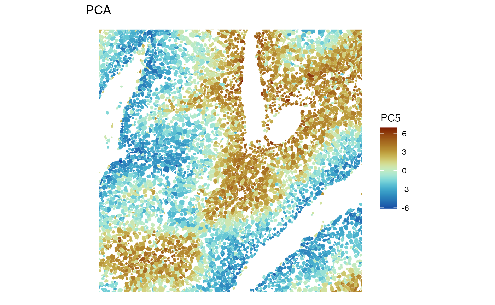
PC5 must be about zonation. Also show a larger scale:
spatialReducedDim(sfe, "PCA", components = 5, colGeometryName = "centroids",
divergent = TRUE, diverge_center = 0, scattermore = TRUE)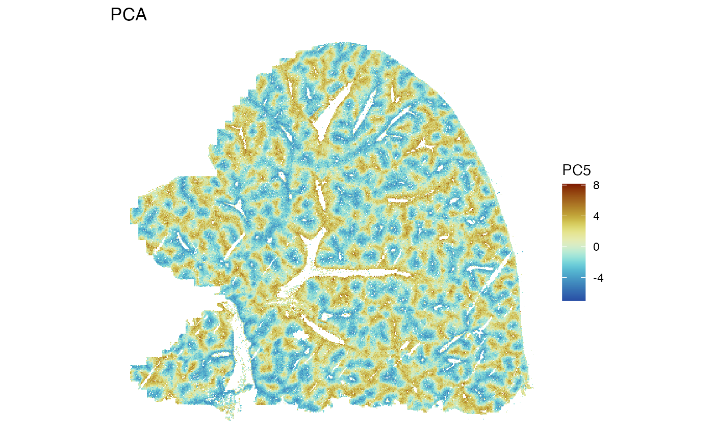
Moran scatter plot
Local positive and negative spatial autocorrelation can average out in global Moran’s I. From the zoomed in plots and gene loadings above, some PCs are about endothelial cells. The Moran scatter plot can help discovering more local heterogeneity.
sfe <- reducedDimUnivariate(sfe, "moran.plot", dimred = "PCA", components = 1:6)
plts <- lapply(seq_len(6), function(i) {
moranPlot(sfe, paste0("PC", i), binned = TRUE, hex = TRUE, plot_influential = FALSE)
})
wrap_plots(plts, widths = 1, heights = 1) +
plot_layout(ncol = 3) +
plot_annotation(tag_levels = "1",
title = "Moran scatter plot for non-spatial PCs") &
theme(legend.position = "none")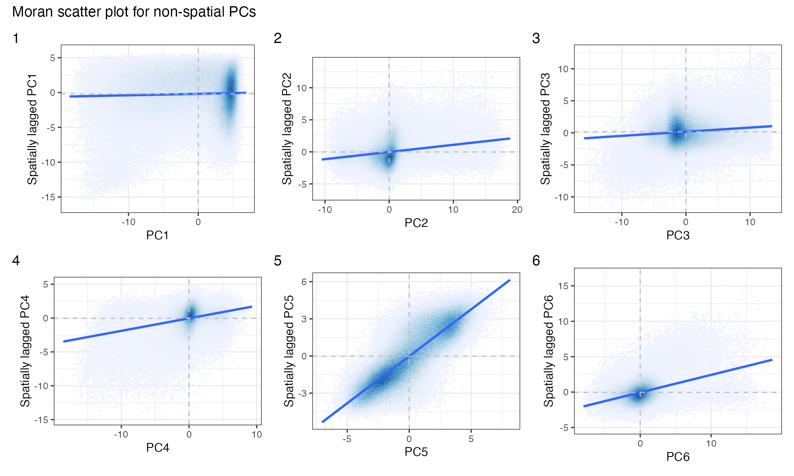
PCs 1-3 have some fainter clusters outside the main cluster, indicating heterogeneous spatial autocorrelation. Also make Moran scatter plots for MULTISPATI
sfe <- reducedDimUnivariate(sfe, "moran.plot", dimred = "multispati",
components = c(1:5, 40),
# Not to overwrite non-spatial PCA moran plots
name = "moran.plot2")
plts2 <- lapply(c(1:5, 40), function(i) {
moranPlot(sfe, paste0("PC", i), binned = TRUE, hex = TRUE,
plot_influential = FALSE, name = "moran.plot2")
})
wrap_plots(plts2, widths = 1, heights = 1) +
plot_layout(ncol = 3) +
plot_annotation(tag_levels = "1",
title = "Moran scatter plot for MULTISPATI PCs") &
theme(legend.position = "none")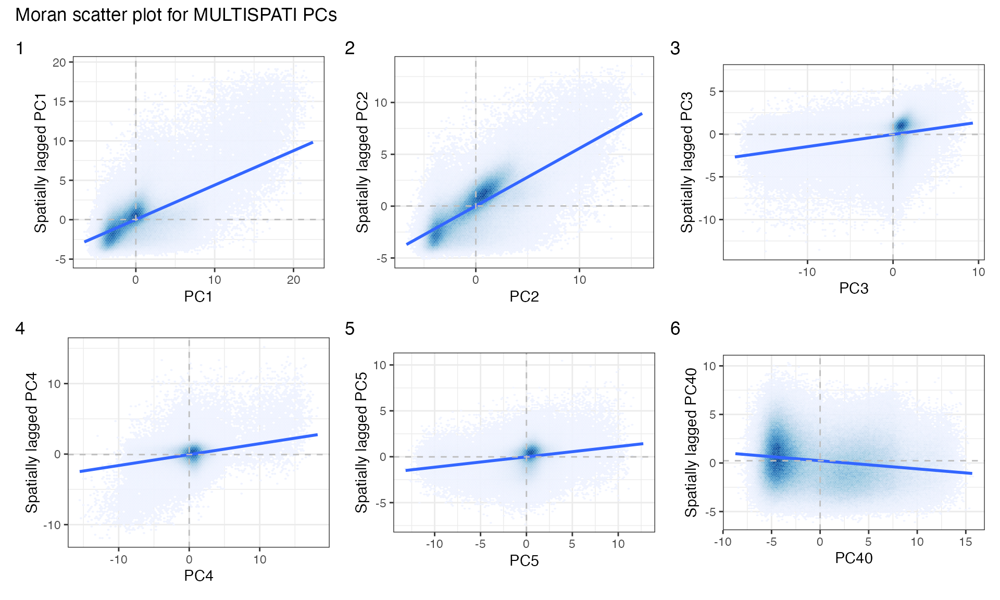
There are some interesting clusters.
Clustering with MULTISPATI PCA
In the standard scRNA-seq data analysis workflow, a k nearest neighbor graph is found in the PCA space, which is then used for graph based clustering such as Louvain and Leiden, which is used to perform differential expression. Spatial dimension reductions can similarly be used to perform clustering, to identify spatial regions in the tissue, as done in (Shang and Zhou 2022; Ren et al. 2022; Zhang et al. 2023). This type of studies often use a manual segmentation as ground truth to compare different methods that identify spatial regions.
The problem with this is that spatial region methods are meant to help us to identify novel spatial regions based on new -omics data, which might reveal what’s previously unknown from manual annotations. If the output from a method doesn’t match manual annotations, it might simply be pointing out a previously unknown aspect of the tissue rather than wrong. Depending on the questions being asked, there can simultaneously be multiple spatial partitions. This happens in geographical space. For instance, there’s land use and neighborhood boundaries, but equally valid are watershed boundaries and types of rock formation. Which one is relevant depends on the questions asked.
Here we perform Leiden clustering with non-spatial and MULTISPATI PCA and compare the results. For the k nearest neighbor graph, I used the default k = 10.
system.time({
set.seed(29)
sfe$clusts_nonspatial <- clusterCells(sfe, use.dimred = "PCA",
BLUSPARAM = NNGraphParam(
cluster.fun = "leiden",
cluster.args = list(
objective_function = "modularity",
resolution_parameter = 1
)
))
})
#> Warning in (function (to_check, X, clust_centers, clust_info, dtype, nn, :
#> detected tied distances to neighbors, see ?'BiocNeighbors-ties'
#> user system elapsed
#> 802.856 4.460 808.790See if clustering with the positive MULTISPATI PCs give more spatially coherent clusters
system.time({
set.seed(29)
sfe$clusts_multispati <- clusterRows(reducedDim(sfe, "multispati")[,1:20],
BLUSPARAM = NNGraphParam(
cluster.fun = "leiden",
cluster.args = list(
objective_function = "modularity",
resolution_parameter = 1
)
))
})
#> Warning in (function (to_check, X, clust_centers, clust_info, dtype, nn, :
#> detected tied distances to neighbors, see ?'BiocNeighbors-ties'
#> user system elapsed
#> 685.932 5.049 692.712Plot the clusters in space:
plotSpatialFeature(sfe, c("clusts_nonspatial", "clusts_multispati"),
colGeometryName = "centroids",
scattermore = TRUE) &
guides(colour = guide_legend(override.aes = list(size=2), ncol = 2))
The MULTISPATI clusters do look somewhat more spatially structured than clusters from non-spatial PCA. Also zoom into a small area:
plotSpatialFeature(sfe, c("clusts_nonspatial", "clusts_multispati"),
colGeometryName = "cellSeg",
bbox = bbox_use) &
guides(fill = guide_legend(ncol = 2))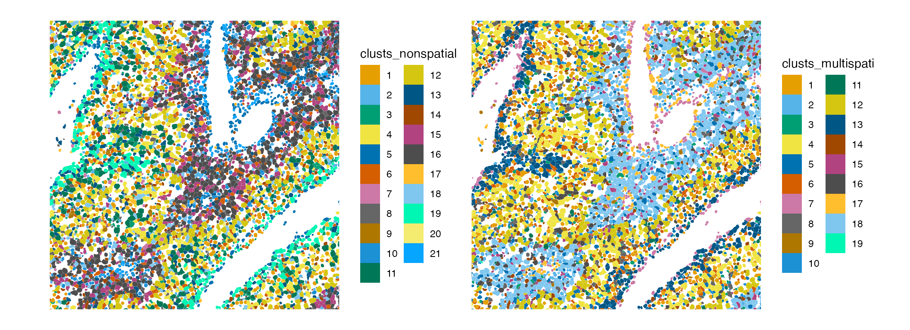
What do these clusters mean? Clusters are supposed to be groups of different spots that are more similar within a group, sharing some characteristics. Non-spatial and MULTISPATI PCA use different characteristics for the clustering. Non-spatial PCA finds genes that are good for telling cell types apart, although those genes may happen to be very spatially structured. Non-spatial clustering aims to find these groups only from gene expression, and cells with similar gene expression can be surrounded by cells of other types in histological space. This is just like mapping Art Deco buildings, which are often near Spanish revival and Beaux Art buildings whose styles are quite different and perform different functions, thus not necessarily forming a coherent spatial region.
In contrast, MULTISPATI’s positive components find genes that must characterize spatial regions in addition to distinguishing between different cell types. Which genes are involved in each MULTISPATI component may be as interesting as the clusters. It would be interesting to perform gene set enrichment analysis, or to interpret this as some sort of spatial patterns of spatially variable genes. This is like mapping when the buildings were built, so Art Deco, Spanish revival, Beaux Art popular in the 1920s and 1930s will end up in the same cluster and form a more spatially coherent region, which can be found in DTLA Historical Core and Jewelry District, and Old Pasadena. Hence non-spatial clustering of spatial data isn’t necessarily bad. Rather, it tells a different story and reveals different aspects of the data from spatial clustering.
Session Info
sessionInfo()
#> R version 4.3.2 (2023-10-31)
#> Platform: x86_64-apple-darwin20 (64-bit)
#> Running under: macOS Ventura 13.6
#>
#> Matrix products: default
#> BLAS: /Library/Frameworks/R.framework/Versions/4.3-x86_64/Resources/lib/libRblas.0.dylib
#> LAPACK: /Library/Frameworks/R.framework/Versions/4.3-x86_64/Resources/lib/libRlapack.dylib; LAPACK version 3.11.0
#>
#> locale:
#> [1] en_US.UTF-8/en_US.UTF-8/en_US.UTF-8/C/en_US.UTF-8/en_US.UTF-8
#>
#> time zone: UTC
#> tzcode source: internal
#>
#> attached base packages:
#> [1] stats4 stats graphics grDevices utils datasets methods
#> [8] base
#>
#> other attached packages:
#> [1] patchwork_1.1.3 sf_1.0-14
#> [3] BiocParallel_1.36.0 BiocSingular_1.18.0
#> [5] bluster_1.12.0 tibble_3.2.1
#> [7] tidyr_1.3.0 stringr_1.5.1
#> [9] scran_1.30.0 scater_1.30.1
#> [11] ggplot2_3.4.4 scuttle_1.12.0
#> [13] SingleCellExperiment_1.24.0 SummarizedExperiment_1.32.0
#> [15] Biobase_2.62.0 GenomicRanges_1.54.1
#> [17] GenomeInfoDb_1.38.1 IRanges_2.36.0
#> [19] S4Vectors_0.40.2 BiocGenerics_0.48.1
#> [21] MatrixGenerics_1.14.0 matrixStats_1.1.0
#> [23] SpatialFeatureExperiment_1.3.0 SFEData_1.4.0
#> [25] Voyager_1.4.0
#>
#> loaded via a namespace (and not attached):
#> [1] splines_4.3.2 later_1.3.2
#> [3] bitops_1.0-7 filelock_1.0.2
#> [5] lifecycle_1.0.4 edgeR_4.0.2
#> [7] lattice_0.22-5 magrittr_2.0.3
#> [9] limma_3.58.1 sass_0.4.8
#> [11] rmarkdown_2.25 jquerylib_0.1.4
#> [13] yaml_2.3.7 metapod_1.10.0
#> [15] httpuv_1.6.13 sp_2.1-2
#> [17] RColorBrewer_1.1-3 DBI_1.1.3
#> [19] abind_1.4-5 zlibbioc_1.48.0
#> [21] purrr_1.0.2 RCurl_1.98-1.13
#> [23] rappdirs_0.3.3 GenomeInfoDbData_1.2.11
#> [25] ggrepel_0.9.4 irlba_2.3.5.1
#> [27] terra_1.7-55 units_0.8-5
#> [29] RSpectra_0.16-1 dqrng_0.3.2
#> [31] pkgdown_2.0.7 DelayedMatrixStats_1.24.0
#> [33] codetools_0.2-19 DelayedArray_0.28.0
#> [35] tidyselect_1.2.0 farver_2.1.1
#> [37] ScaledMatrix_1.10.0 viridis_0.6.4
#> [39] BiocFileCache_2.10.1 jsonlite_1.8.8
#> [41] BiocNeighbors_1.20.0 e1071_1.7-14
#> [43] ellipsis_0.3.2 systemfonts_1.0.5
#> [45] tools_4.3.2 ggnewscale_0.4.9
#> [47] ragg_1.2.6 Rcpp_1.0.11
#> [49] glue_1.6.2 gridExtra_2.3
#> [51] SparseArray_1.2.2 mgcv_1.9-0
#> [53] xfun_0.41 dplyr_1.1.4
#> [55] HDF5Array_1.30.0 withr_2.5.2
#> [57] BiocManager_1.30.22 fastmap_1.1.1
#> [59] boot_1.3-28.1 rhdf5filters_1.14.1
#> [61] fansi_1.0.6 spData_2.3.0
#> [63] digest_0.6.33 rsvd_1.0.5
#> [65] R6_2.5.1 mime_0.12
#> [67] textshaping_0.3.7 colorspace_2.1-0
#> [69] wk_0.9.1 scattermore_1.2
#> [71] RSQLite_2.3.4 hexbin_1.28.3
#> [73] utf8_1.2.4 generics_0.1.3
#> [75] class_7.3-22 httr_1.4.7
#> [77] S4Arrays_1.2.0 spdep_1.3-1
#> [79] pkgconfig_2.0.3 scico_1.5.0
#> [81] gtable_0.3.4 blob_1.2.4
#> [83] XVector_0.42.0 htmltools_0.5.7
#> [85] scales_1.3.0 png_0.1-8
#> [87] SpatialExperiment_1.12.0 knitr_1.45
#> [89] rjson_0.2.21 nlme_3.1-164
#> [91] curl_5.2.0 proxy_0.4-27
#> [93] cachem_1.0.8 rhdf5_2.46.1
#> [95] BiocVersion_3.18.1 KernSmooth_2.23-22
#> [97] parallel_4.3.2 vipor_0.4.5
#> [99] AnnotationDbi_1.64.1 desc_1.4.3
#> [101] s2_1.1.5 pillar_1.9.0
#> [103] grid_4.3.2 vctrs_0.6.5
#> [105] promises_1.2.1 dbplyr_2.4.0
#> [107] beachmat_2.18.0 xtable_1.8-4
#> [109] cluster_2.1.6 beeswarm_0.4.0
#> [111] evaluate_0.23 magick_2.8.1
#> [113] cli_3.6.1 locfit_1.5-9.8
#> [115] compiler_4.3.2 rlang_1.1.2
#> [117] crayon_1.5.2 labeling_0.4.3
#> [119] classInt_0.4-10 fs_1.6.3
#> [121] ggbeeswarm_0.7.2 stringi_1.8.2
#> [123] viridisLite_0.4.2 deldir_2.0-2
#> [125] munsell_0.5.0 Biostrings_2.70.1
#> [127] Matrix_1.6-4 ExperimentHub_2.10.0
#> [129] sparseMatrixStats_1.14.0 bit64_4.0.5
#> [131] Rhdf5lib_1.24.0 KEGGREST_1.42.0
#> [133] statmod_1.5.0 shiny_1.8.0
#> [135] highr_0.10 interactiveDisplayBase_1.40.0
#> [137] AnnotationHub_3.10.0 igraph_1.5.1
#> [139] memoise_2.0.1 bslib_0.6.1
#> [141] bit_4.0.5